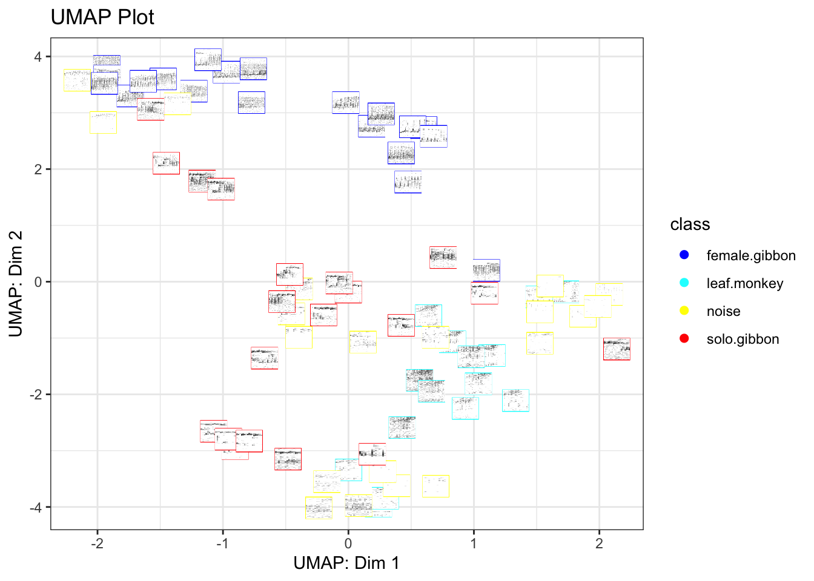
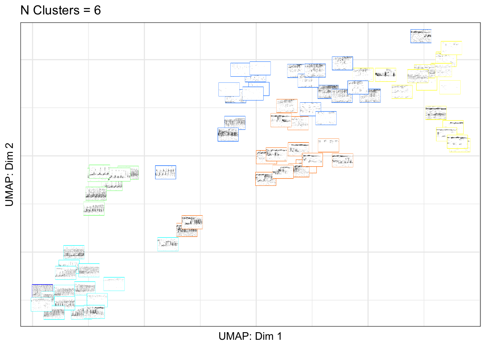

5 Part 4. Data visualization
5.1 Part 4a. Create a UMAP plot colored by class
library(gibbonR)
library(ggpubr)
#> Loading required package: ggplot2
#>
#> Attaching package: 'ggplot2'
#> The following object is masked from 'package:randomForest':
#>
#> margin
UMAPBiplotAddSpectrograms(input.dir.Focal="/Users/denaclink/Desktop/RStudio Projects/gibbonR/data/MultipleSoundClasses/",output.dir.Focal="/Users/denaclink/Desktop/RStudio Projects/gibbonR/data/MultipleSoundClasses/Thumbnails/",add.spectrograms=TRUE,min.freq=400,max.freq=1600,main="UMAP Plot")
#> [1] "Step 1 Calculating MFCCs"
#> [1] "Step 2 Creating biplot"
#> [1] "Step 3 Creating Spectrograms"
#> [1] "/Users/denaclink/Desktop/RStudio Projects/gibbonR/data/MultipleSoundClasses/Thumbnails/ already exists"
#> [1] "Step 4 Adding Spectrograms to Plot "

## Part 4b. Create a UMAP plot colored by affinity propagation clustering
library(gibbonR)
library(ggpubr)
library(apcluster)
#>
#> Attaching package: 'apcluster'
#> The following object is masked from 'package:stats':
#>
#> heatmap
AffinityBiplotAddSpectrograms(input.dir.Focal="/Users/denaclink/Desktop/RStudio Projects/gibbonR/data/MultipleSoundClasses/",output.dir.Focal="/Users/denaclink/Desktop/RStudio Projects/gibbonR/data/MultipleSoundClasses/Thumbnails/",class='fixed', q.fixed=0.1,add.spectrograms=TRUE,min.freq=400,max.freq=1600,main="UMAP Plot")
#> [1] "Step 1 Calculating MFCCs"
#> [1] "Step 2 Computing unsupervised clustering with fixed q"
#> [1] "Step 3 Creating Spectrograms "
#> [1] "/Users/denaclink/Desktop/RStudio Projects/gibbonR/data/MultipleSoundClasses/Thumbnails/ already exists"
#> [1] "Adding Spectrograms to Plot Step 3 of 3"